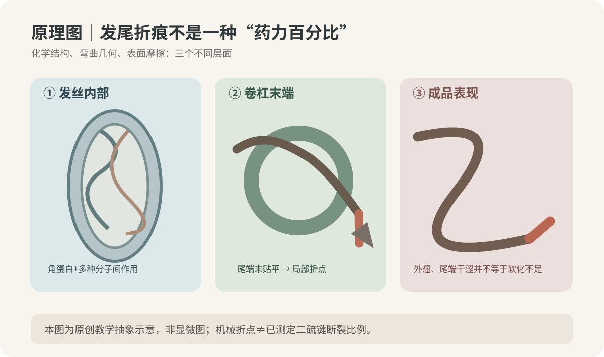
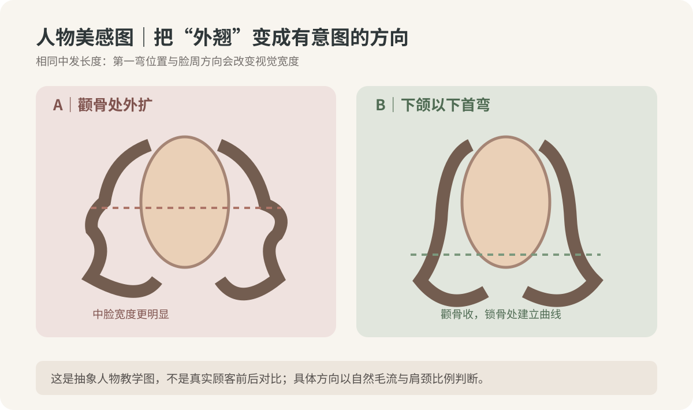
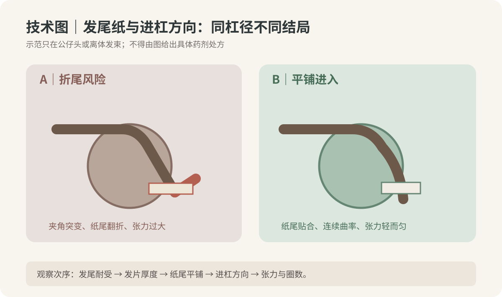

2026-10-19
【今日核心问题】同样药剂、杠径和卷度目标，为什么某些发尾形成顺滑S弯，另一些却在末端突然外翘或留下折线？
一、先区分“结构承受能力”和“被赋予的几何形态”。毛发毛鳞片（cuticle）影响摩擦和表面顺滑感；皮质层（cortex）含角蛋白中间丝及伴随基质，是抗拉与抗弯的重要结构。二硫键提供部分稳定交联；氢键、离子键以及疏水相互作用和毛发湿度共同影响黏弹性。还原剂作用于部分二硫键，让毛发在特定条件下更易重新成型；卷杠、纸尾与张力将发丝约束为目标曲线；水分塑化、温度与干燥改变纤维松弛和暂时性结合；配套氧化剂参与再交联。任何一个步骤都不能独自代替完整工艺。
二、尾部折线是“局部曲率突变”，并不等于从科学上测得还原不够。纸尾翻折、发片过厚导致尾端无法贴平、卷入角突然改变、过度牵拉以及自然毛流方向与脸周进杠方向冲突，都可能形成局部急弯或外翻。热、化学变化和后续打理可能让这种几何异常更明显，但不能仅凭成品折线认定原因，更不能据此给出新的pH或还原剂浓度。
三、发尾耐受也决定能否追求同样大S。旧漂、重复热烫段可能存在较高摩擦、低湿态强度和不稳定的形变恢复；拉伸后恢复慢、异常黏滑或易断的尾端，不应靠更紧张力和加强药力“压住外翘”。弱发尾宜不卷/不涂放、缩小处理范围或修剪。物理弯曲刚度与发径、材料状态、截面椭圆度有关，实际发束还受根数和互相摩擦影响。
四、今日排查原则：先看自然落发与毛流，再看目标第一弯的位置、有效长度、杠体实际外径、纸尾铺平与端部张力；独立记录化学历史与厂家配套工艺。不能把门店pH—“软化百分比”换算直接等同毛发二硫键断裂率，也不能以再次氧化或极高温度补救机械卷入折点。

【新文献检索】优先检查2026-10-12至2026-10-19的新发表研究，未核实到直接验证“法式大S发尾纸尾折线率、固定杠径与最佳药力”的新高质量原始试验；本课使用已核实的经典原始测量与2024年机制综述。科学论文证明结构与材料机制，本文对纸尾、升角、分区的具体操作是门店示教候选，不能伪装成论文结论。
S1｜F.-J. Wortmann、A. Schwan-Jonczyk，《Investigating hair properties relevant for hair ‘handle’. Part I: hair diameter, bending and frictional properties》，International Journal of Cosmetic Science，2006年2月（首次在线2006-01-27），原始发束物性测量，DOI 10.1111/j.1467-2494.2006.00306.x。核心：发径、截面椭圆度、弯曲刚度及根中尾摩擦存在可测差异。证据中：实测但只选定部分发束，非化学烫发对照试验。能支持：同一卷杠对不同尾部发质的响应不能只由杠径解释。不能证明：某纸尾方法或某外径可消除全部外翘。
S2｜Akio Kuzuhara，《Analysis of structural changes in permanent waved human hair using Raman spectroscopy》，Biopolymers，2007年2月15日刊载、2006年12月1日首次在线，原始拉曼/电镜研究，DOI 10.1002/bip.20646。核心：永久烫后毛发皮质蛋白结构与纤维强度发生变化，不能把二硫键信号视作全部损伤。证据中：测量技术清楚，但特定发束和工艺不能泛化。能支持：旧烫发尾必须另做强度评估。不能证明：折线由二硫键断裂不足造成或追加软化可以补救。
S3｜S. Breakspear、B. Nöcker、C. Popescu，《Chemical bonds and hair behaviour—A review》，International Journal of Cosmetic Science，2024年5月11日首次在线，2024年第46卷，机制综述，DOI 10.1111/ics.12967。核心：氢键、二硫键、离子键和疏水作用对毛发力学有异质贡献。证据中至强（多技术综述；不含本文排杠随机试验）。能支持：水分和化学历史都影响成形与弹性。不能推断：通过手感能精确测量断键率、指定热烫温度或纸尾方案。
【模拟教学案例｜虚构人物；无真实顾客图像】37岁女性，方椭圆脸、颧部轻外扩、下颌线较清晰；后枕略扁、颈偏短、肩较窄，气质理性松弛。中发锁骨下约6厘米，中低层次，发量中等，顶区发径中等偏细、后枕略粗硬，两侧自然毛流偏向耳后；分缝偏左。日常经常将右侧头发别耳后、每天能吹3—5分钟。新生发约6厘米无化学史，中段8个月前染过巧克力棕一次，发尾约4厘米有旧热烫历史；右脸周有少量昔日漂浅残留，湿态试拉回弹较慢。
【目标】参考图顶部柔和、后脑有圆度，耳下进入大S，发尾自然内收或顺势离开颈侧，不要两边“喇叭口”和碎短层次。该参考图为吹整效果，不代表自然干零打理。
【诊断】最大风险不是“卷不够紧”，而是右脸周自然别耳习惯、偏后的毛流方向与目标内扣方向相冲突，加上尾部旧烫/旧漂局部耐受不确定。修剪先保留锁骨位置的底线密度；脸周轻柔层次落点围绕下颌与锁骨，中低层次只释放必要重量；后颈避免堆叠细密卷。顶区维持轻C根部支撑，后枕略补圆，第一明显S弯从耳下靠近下颌出现，两侧卷向顺实际毛流过渡。
【分段处理】先将根/中/旧发尾标在咨询记录：新生区可依据合规配套产品说明选择适用的还原体系候选；染色段需先测耐受；旧烫/旧漂发尾不默认参与再次还原，湿态拉伸异常或易断时退出并优先修剪。具体还原剂种类、pH、百分比、涂放时间、加热模式及氧化用量仅采用实物产品和设备厂家相互兼容的技术说明，本文不能凭模拟人物给通用数字；禁止自行混配跨品牌产品。
【冲水与卷入】严格冲洗还原剂，用一致方式吸水并记录持续滴水与异常干涩发片。按头部曲面与毛流分薄发片，展示纸尾由根向尾连续顺平；纸尾不翻折，不靠拉紧硬拽旧尾入杠。先核对杠体外径与有效卷入长度，尾端不足形成连贯弯时降低卷度目标或局部不卷。右侧别耳区域优先在干发落点确认最终自然翻转方向，不机械照搬左侧镜像。
【热与二剂】按配套体系说明控制卷入、设备档位与各区操作时序；避免仅因某区显湿或尾端外翘就增加高温、还原剂或二剂。还原/热/氧化各步骤都完整执行对应厂家流程，有明显断裂征兆的区域停止追加处理。
【交付检查】正面观察是否颧部两侧同样外扩；45度看后枕圆度与首弯连接；侧面看发尾是否出现急折、底线是否透光。自然吹干可能比造型图松，需要让顾客看3分钟顺自然毛流吹发根、用手掌辅助发尾方向的示范。不立即通过第二次化学处理追求完全对称。
【常见失误归因】右前侧突然外翘：先核对自然毛流与进杠方向；局部末端折点：检查纸尾、尾端受损与张力；后颈堆：先看分区和层次重量；干涩炸尾：排除旧处理累积损伤；整体大S不明显：先看有效卷入长度、吹整与实际工艺记录，再讨论其他原因。
【设计不是让两侧完全镜像】今日人物是颧部略宽、后枕略扁和偏短颈的组合；最大的视觉目标是脸周宽度受控、后脑更圆、颈部得到留白。正面：最大体积宜在耳后至后枕上部，而非双侧颧骨处；两侧分缝和别耳习惯可能不同，第一弯高度可略有调整但视觉重心保持协调。45度：观察从颞部向下颌的线条有没有硬折点，后枕圆弧能否接到肩颈下摆。侧面：顶区自然起伏、后枕补圆、后颈收紧，避免“上平下鼓”。
对于宽脸短颈人物，往往要降低颧骨侧面的鼓出并保留下颌以下连贯度；对于瘦长脸窄肩，必要时允许耳上后侧有适度横向支撑，不可一概把弯下移。高密度中粗发比低密度细发更需要看重量和分片；尾端稀少者优先保留底线而不是追求层层小卷。
图3只比较视觉位置，不代表真实顾客效果、卷度持久率或无维护的保证。判断“发尾内收”必须放在自然落发及顾客常见分缝/别耳习惯中，而非在夹具强拉情况下看端部方向。

【图1｜原理机制】区分皮质层角蛋白力学结构、卷杠末端的局部曲率与完成后可见外翘。这张图看什么：发尾折点是几何观察项，不能直接由画面推断二硫键断裂率。
【图2｜技术分区与纸尾】左右比较“卷入端部夹角突变、翻折纸尾”和“尾端连续贴合”的抽象路径。这张图看什么：若尾端折线出现，先复核纸尾的末端平铺、轻而匀的张力、发片厚度与进杠方向；不是依图照搬药剂和热参数。
【图3｜人物美感】同一抽象人物的“颧骨处外扩”和“下颌以下首弯”对照。这张图看什么：发型最大宽度与第一明显弯高度改变人物比例，不能将故意的线条转向误认成缺陷；全部图均为原创SVG示意，不涉及真人、第三方图片或实验照片。
【仅公仔头/离体发束的结构示教候选｜不是商业设备通用处方】提升角以局部头皮切线为0°，杠体外径以实际测量毫米数为准，不能把品牌14/16/18号等同通用外径。
顶部：目标是轻C支撑，候选60—80°，外径28—32mm，约1—1.5圈仅作为观察有效发长的公仔头示范；避免压根和顶部爆出不自然横向宽度。
枕骨上部：目标补圆，候选45—70°，外径26—30mm，沿头骨曲面薄分，绕流向过渡，禁止厚片跨越凸点导致局部硬折。
左侧：耳后至下颌柔S，候选25—50°，外径30—34mm，核对分缝、毛流与自然下垂角，首弯不要卡在颧部最高点。
右侧：即使外径与左侧相同也不机械镜像；先检查惯常别耳后的自然毛流，候选25—50°，外径30—34mm，卷入方向为最终自然落点服务；有旧漂发尾可缩小范围或不卷。
后颈：收紧底线，候选0—25°或不烫，大外径或不卷，先通过剪裁去除无谓堆重，不为“全头烫完”而强卷受损尾。
刘海和脸周：按有效长度和分缝候选20—45°或不卷，特别检查纸尾是否平铺、防短发片局部反折；张力只求轻而均匀，不让头皮或发丝受牵扯。
【五项纠错】压根先看根部提升与回落；炸根先看提拉、发片密度及实际卷入；发尾折线先检查纸尾/尾端强度和角度急变；两侧外翻先排查毛流与日常别耳；上下断层先看前后相邻区杠向与长度连接。只做结构分析时不使用还原或高热。

【咨询先问五句】①你说“不要外翘”是发尾朝外、两侧炸宽，还是只要看起来顺滑？②你平时从哪边分缝、会不会经常别到耳后？③参考图是自然晾干还是专业吹整？④过去一年各段烫染漂历史在哪里，能接受修掉多少旧尾？⑤每天能用几分钟吹发根和脸周？
【模拟门店对话】顾客：“我上次烫大S，一边很自然，另一边的发尾老往外飞，是药水没烫到吗？”发型师：“药水只是可能的一个环节，不能只凭尾巴翘就判断软化不足。我先看你的毛流、常别耳的方向和发尾有没有旧烫史，再确认那一片纸尾有没有被折进去。”顾客：“能不能再烫紧一点让它往里？”发型师：“如果那一段旧漂发尾的耐受不好，继续加强反而容易毛躁甚至断。我们先通过剪裁、层次和卷向设计，让它顺着你平时的习惯落下，再按产品说明判断哪一段能安全处理。”顾客：“我不想天天卷棒。”发型师：“那目标就是洗后适当松、吹干3分钟能整理，而不是保证与你看到的吹整参考图每根头发完全一样。”
【可直接使用话术】“法式大S的关键不是每一根都卷得一样紧，而是每一段毛流、弯曲位置和发尾密度连接得自然。我会先把你想要的轮廓设计好，再检查旧发尾能否承受化学处理；如果不能，宁愿修剪或改方向，也不靠加药力硬压折痕。”
【预期管理】自然卷、吹整、洗后松弛、天气和湿度都会影响结果。不能承诺永久蓬松、零打理或完全不外翘。
【先练再看】同样外径30mm的公仔头分片示教，A侧发尾铺平、轻张力卷入，B侧为了把短而稀的旧发尾卷入，反复拉紧且纸尾在终端折起。模拟成品中B侧出现明显锐角。现场新人说：“软化不到位，改用更高pH药剂。”请给出第一优先检查项和你的安全处理。
【参考答案】首要排查B侧尾端有效长度与纸尾折起、发片厚度、进杠方向和牵拉张力；不能只凭锐角诊断软化不足，更不应上来提高pH。旧发尾耐受差时先取消这段化学处理，必要时修剪到更健康的长度。
【思维路径】①先确定人物自然落发的期望方向；②标注健康/染后/旧烫/旧漂分段；③测实际杠体外径和有效长度；④看纸尾铺平与末端曲率有没有突变；⑤复核每片张力和流向衔接；⑥只在符合厂家工艺且发质耐受时讨论化学部分；⑦自然干/轻吹后验证视觉重心。
【延伸题】如果同一人物右侧经常别耳后，左侧不别耳，两侧都要求外观协调，你是否必须使用完全相同的进杠方向？参考：不必机械镜像，应以自然落发和最终第一弯连接为优先，但也不应凭外观擅自更改厂家热烫化学流程。
【离体毛束单变量对比：纸尾是否平铺对局部曲率的影响】目标仅学习机械折点，不能由此推导药剂pH、温度、永久烫持久率。材料：同一来源、相似发径和长度的干净离体发束12束，每束根数近似，两个相同外径的低温塑料圆柱、同种纸尾、夹具、量尺、手机固定支架与自然温湿度记录；全程不用还原剂、氧化剂和高温器械。
唯一主动变量：纸尾末端形态。随机分为A组六束（纸尾全程平铺）和B组六束（在离体示教中人为形成一个小折边，仅在毛束上演示错误，不可在人头上模拟折损）。相同水洗/吸水/干燥方式、发束长度、外径、根数、固定点、卷入圈数、张力目标、环境和拍摄角度；用一致夹具维持轻张力，绝不拉伸至损伤。
步骤：①记录编号和每束的干发照片；②按同一方法润湿后吸水，分别采用平铺/折边纸尾在相同圆柱上机械绕一圈，不使用化学或热；③固定时长后解开，在同一标尺前拍摄0分钟与2小时自然落发形态；④放置24小时后重拍，观察末端局部角度急变、发丝散开及可见折点比例；⑤复位并交换另一批毛束复测，至少2轮。
记录表：毛束编号｜纸尾分组｜毛束长度cm｜实际圆柱外径mm｜0分钟末端折点角°｜2h角°｜24h角°｜末端散开0—3级｜异常。角度在相同背景/标尺下估计，不能当仪器级的材料应变测量。
结果判断：若B组更常出现局部锐角，只能说明该批机械示教在该条件下的纸尾端部差异；如果没有差别也不否定真实热烫中的多因素作用。未实际实施实验，不报告想象结果。转为门店标准：公仔头卷入前统一核查纸尾平铺、发尾耐受、有效长度、毛流和张力，老师拍近景作教学反馈；真人操作仍以已验证的安全配套工艺为限。
【一个原理】发尾折线可以来自机械约束与纤维耐受的共同作用；二硫键化学变化、水分热处理和卷杠几何不能混为单一“药力不足”。
【一个容易犯的错误】看到大S末端外翘，就直接加强还原剂、温度或二剂，而没有先检查纸尾、毛流、有效卷入长度与旧尾风险。
【明天最值得观察的细节】门店公仔头每卷一片前，纸尾铺平后从正面、45°与侧面拍一次，确认末端有没有突然改变方向。